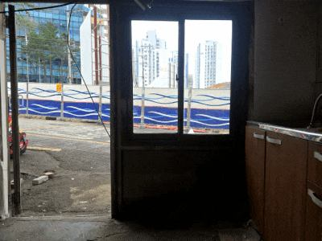
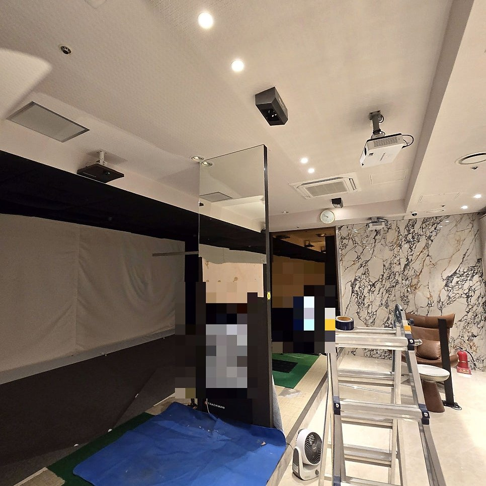
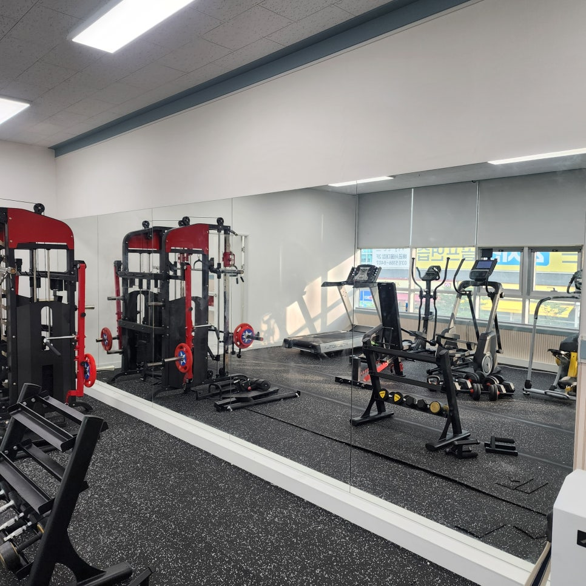

서울 · 경기 · 인천 · 현장 기록 9건
샷시 · 창호 교체
오래된 창호는 틀이 틀어지거나 부품이 낡아 잘 닫히지 않습니다. 창호 교체와 유리 교체를 한 번에 진행합니다.
이런 작업을 합니다
- 노후 알루미늄 창호 샷시 교체
- 알루미늄 샷시 철거 후 하이샷시 설치
- PJ(프로젝트) 창문 설치
- 자동 잠금 창문 샷시 설치
- 불투명 샷시 유리를 투명 유리로 교체
- 상가 12T 대형 강화유리 알루미늄 창호 시공
시공사례
최근 시공사례

영등포 실내 골프 매장 거울수리
거울 수리 문의 가운데 가장 서둘러야 하는 경우가 영업 중인 매장의 깨진 벽거울입니다. 영등포구 문래동의 한 스크린골프장은 8번 타석 옆 칸막이 거울이 골프채에 …
2026.11.15

문짝 교체 대신 유리만 바꾼 유리문수리
유리문 수리라고 해서 문짝을 통째로 갈아야 하는 건 아닙니다. 관악구의 한 상가 입구문은 부딪힌 일 없이 금이 갔는데, 문틀과 부속이 멀쩡해서 깨진 24T 복층유…
2026.11.14

회사 운동실 대형벽거울
대형벽거울은 빈 벽에 붙이는 경우가 대부분이지만, 이번 경기 시흥 현장은 회사 운동실에 기구가 모두 자리 잡은 뒤였습니다. 기구는 거의 옮기지 않고 통로만 비워 …
2026.11.12
유리 교체 후 실리콘은 언제 굳나요?
표면은 30분~2시간이면 마르지만, 하루 정도 지나야 안정적으로 쓸 수 있고 완전히 굳는 데는 24~72시간이 걸립니다. 최소 하루는 세게 여닫거나 물청소하지 않는 것이 좋습니다.